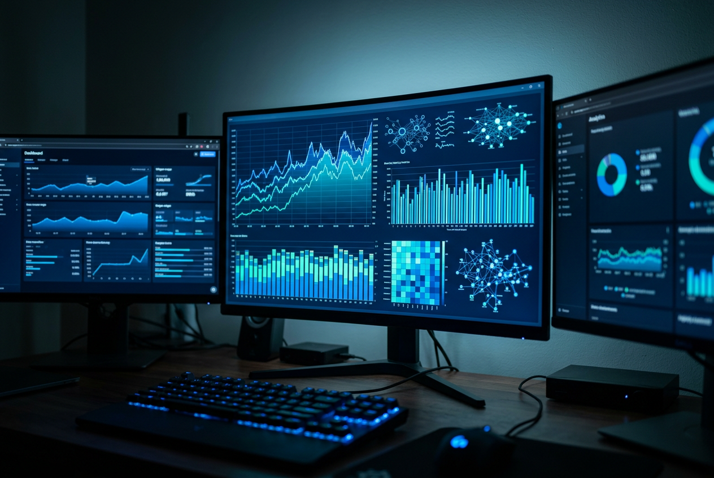

AI-Powered Workflow Platform
데이터에서 인사이트까지,
하나의 워크플로우로
Spectra AI가 팀의 반복 업무를 자동화하고,
의사결정에 집중할 시간을 돌려드립니다.
AI-Powered Workflow Platform
Spectra AI가 팀의 반복 업무를 자동화하고,
의사결정에 집중할 시간을 돌려드립니다.
기업이 도입
업무 시간 절감
평균 고객 만족도
평균 온보딩 시간
이미 사용 중인 Slack, Notion, Jira를
그대로 연결하세요. 별도의 학습이나
마이그레이션이 필요 없습니다.
AI가 팀의 업무 패턴을 학습하고,
반복 작업을 자동으로 처리합니다.
규칙 설정도 자연어로 간편하게.
실시간 대시보드에서 핵심 지표를
한눈에 확인하세요. 주간 리포트도
AI가 자동 생성해 드립니다.
채널별 ROI를 실시간으로 추적하고,
최적의 예산 배분을 AI가 제안합니다.
과거 전환 데이터를 기반으로
가장 유망한 리드를 자동 우선순위화.
업무 흐름의 지연 구간을
자동으로 식별하고 개선안을 제시합니다.

Slack 알림, Notion 데이터베이스,
Jira 이슈 트래킹을 하나의 워크플로우로
통합하여 컨텍스트 전환을 최소화합니다.
Salesforce, HubSpot, Google Workspace의
고객 데이터를 실시간으로 동기화하여
팀 전체가 같은 정보를 공유합니다.
"도입 2주 만에 주간 리포트 작성 시간이
4시간에서 15분으로 줄었습니다.
팀 전체의 분석 역량이 올라간 느낌이에요."
김서연
마케팅 리드, 넥스트커머스
"영업 팀의 리드 전환율이 23% 올랐습니다.
어떤 리드에 집중해야 하는지
더 이상 감에 의존하지 않아요."
이준혁
CRO, 블루웨이브 테크놀로지
"경영진이 원하는 숫자를 실시간으로
볼 수 있게 되었습니다. 데이터 요청 후
대기하는 시간이 사라졌어요."
박지현
COO, 스카이랩 이노베이션
아닙니다. Spectra AI는 Slack, Notion, Jira, Salesforce 등 주요 도구에 대해 원클릭 연동을 제공합니다. 평균 연동 소요 시간은 5분 이내이며, 별도의 개발 리소스가 필요하지 않습니다. 커스텀 연동이 필요한 경우 REST API를 제공합니다.
SOC 2 Type II 인증을 획득했으며, GDPR을 완벽히 준수합니다. 모든 데이터는 AES-256으로 암호화되어 전송 및 저장되며, AWS 서울 리전에서 호스팅됩니다. Enterprise 플랜에서는 온프레미스 배포 옵션도 제공합니다.
14일 무료 체험이 종료되면 자동으로 무료 플랜으로 전환됩니다. 결제 정보 입력 없이 시작하므로 자동 과금은 발생하지 않습니다. 체험 기간 동안의 데이터는 30일간 보관되므로, 이후에도 유료 플랜으로 업그레이드하면 데이터를 이어서 사용할 수 있습니다.
Starter 플랜은 5명, Growth 플랜은 25명까지 지원합니다. Enterprise 플랜은 무제한 사용자를 지원하며, 조직 구조에 맞는 역할 기반 접근 제어(RBAC)를 설정할 수 있습니다.
모든 플랜에 셀프 온보딩 가이드와 비디오 튜토리얼이 포함되어 있습니다. Growth 이상 플랜에는 전담 고객 성공 매니저가 배정되어 초기 세팅부터 팀 교육까지 지원합니다. 평균 온보딩 소요 시간은 2일입니다.